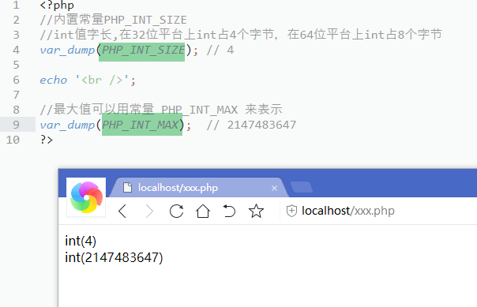
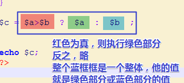
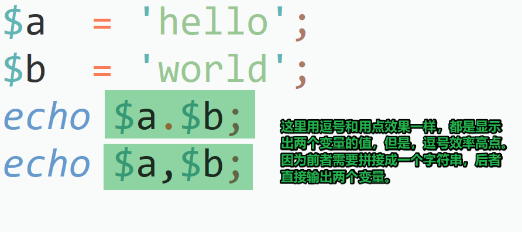

1 <?php
2 $a = 10;
3 $b = 0;
4 echo $a/$b; //Warning: Division by zero in E:\html_root\1.php on line 4
5 ?>
参考内容：
1.PHP 不支持无符号的 integer（就是说，不像C语言，还有无符号整型数据类型，PHP的整型都是有符号的，就是说，要消耗一位放符号位的）。
Integer 值的字长可以用常量 PHP_INT_SIZE来表示，在32位平台上int占4个字节，在64位平台上int占8个字节
自 PHP 4.4.0 和 PHP 5.0.5后，最大值可以用常量 PHP_INT_MAX 来表示，在32位平台上int的最大值2^31 - 1，在64位平台上int最大值2^63 - 1
最小值可以在 PHP 7.0.0 及以后的版本中用常量 PHP_INT_MIN 表示。
在32位的平台上，int型数据可以从-2,147,483,648到2,147,483,647
在64位的平台上，int型数据可以从-9,223,372,036,854,775,808到9,223,372,036,854,775,807

如果给定的一个数超出了 integer 的范围，将会被解释为 float。同样如果执行的运算结果超出了 integer 范围，也会返回 float。
1 <?php
2 echo '<br />';
3 var_dump(PHP_INT_SIZE,PHP_INT_MAX ); //int(4) int(2147483647)
4 //执行结果说明我这个平台，用4个字节，32位来存放整型数据，最大的int型数据是2147483647
5 //问题：在我这php环境中，如果一个数字大于2147483647呢？
6 //答案：自动转为float型数据,举例如下：
7 $a = 2147483648;
8 var_dump($a); //float(2147483648)
9 ?>
2.为什么在不同的平台上int类型所占字节数有差异呢
不管什么类型，编译型语言都会把源码编译成机器码，由于不同平台寄存器位宽不一样， 所以有了自己对int的规定， 导致int 这个数据类型比较特殊，具体分配的字节数与机器字长和编译器有关。但一般等于机器寄存器位宽(64位平台除外，默认为4字节)，如在32位平台上（所谓32位平台是指通用寄存器的数据宽度是32）编写代码，int 类型分配4个字节，而在16位平台是则分配2个字节。编译器是把代码转换为机器码的软件，如果他愿意，可以把int转换为256位的，只不过会增加机器的复杂度，降低可移植性。
3.平台
个人把这三者合起来考虑（CPU+OS+Compiler）是因为：1、64位机器也可以装32位系统（x64装XP）；2、32位机器上可以有16/32位的编译器（XP上有tc是16位的，其他常见的是32位的）；3、即使是32位的编译器也可以弄出64位的integer来（int64）。以上这些是基于常见的wintel平台，加上我们可能很少机会接触的其它平台（其它的CPU和OS），所以个人认为所谓平台的概念是三者的组合。虽然三者的长度可以不一样，但显然相互配合（即长度相等，32位的CPU+32位的OS+32位的Compiler）发挥的能量最大。另外一个话题，如果只是从抽象的层面来看，每个程序有的只是虚拟的计算环境，可以不必考虑实际的环境，只需要了解虚拟环境的情况就可以了，这在不考虑移植性或者非底层编程的时候是很有帮助的，这样可以使你关注你的逻辑而不是实现
4.贴吧中搜到的因为平台不同遇到的一个问题
求模运算的正负值，有点出乎意料，不太符合直觉
1 <?php
2 $a = 10;
3 $b = 3;
4 var_dump($a % $b); //int(1)
5 var_dump(10 % -3); //int(1)
6 var_dump(-10 % 3); //int(-1)
7 var_dump(-10 % -3); //int(-1)
8 //可以看出，求模运算的结果是正是负取决于
9 //前面的那个数的正负(这里是10的正负)
10
11 ?>
注意下全等于和等于的区别，如下
1 <?php
2 /*
3 * 等于和全等于的区别是：
4 * 等 于 ：判断的时候，转化一下类型，值是相同的即可
5 * 全等于: 值相同，数据类型也需要相同才行
6 * 例子如下：
7 */
8 $a = 5;
9 $b = '5';
10 var_dump($a == $b); //bool(true)
11 var_dump($a === $b); //bool(false)
12
13 ?>再比如
1 <?php
2
3 $a = 0;
4 $b = false;
5 var_dump($a == $b); //bool(true)
6 var_dump($a === $b); //bool(false)
7
8 ?>再比如;
1 <?php
2
3 $a = ''; //空字符串
4 $b = false;
5 var_dump($a == $b); //bool(true)
6 var_dump($a === $b); //bool(false)
7 /*
8 * 实验得知：空字符串''，0，字符串'0'，null， flase 用等于判断的话，是true
9 * 注意：空格不是空，把空格看出一个字母即可。' '和''是不同的
10 *
11 */
12
13 ?>
if (表达式1) { 表达式2 }else{ 表达式3 }
表达式1为真执行表达式2，否则执行表达式3
三元运算符是，表达式1?表达2:表达式3
如果表达式1成立，整个三元运算符整体的值是表达式2，否则是表达式3

&& 并且 ： 真&&真还是真。。。略
|| 或者
重点,++，--在变量前面或后面的时候，整体值是不同的。可以看成两步走，
1 <?php
2
3 $b = 8;
4 $a = $b++; // 1.先返回变量b值的值给变量a，2.再把变量b加1
5 //递增、递减运算符要注意：1.凡是运算符，皆有运算结果，它的运算结果就是
6 //变量自身，因此$a的值也就是$b++这个表达式的值，也就是$b的初始值，也就是8
7 //而，运算符运算过后，$b是自身加1的，所以$b是9
8 //结果如下：
9 var_dump($a,$b); //int(8) int(9)
10
11 $d = 8;
12 $c = ++$d; //++在变量前，1.变量d先加1，表达式再返回变量值d的值
13 var_dump($c,$d); //int(9) int(9)
14
15 ?>

1 <?php
2
3 $c = ($a=8);
4 /*
5 * 上面就是赋值运算符，1.将8赋给变量a, 2.整个表达式的值为8
6 */
7
8 var_dump($c); // int(8)
9 ?>